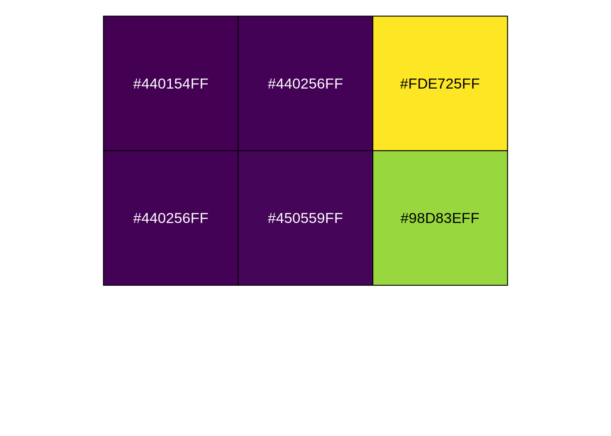

Capítulo 8 Tablas
Por defecto, la forma en que R Markdown muestra tablas es bastante feo porque muestra lo que verías si corrieras el código en la consola.
library(dplyr)
library(tidyr)
library(lubridate)
parques_ancho <- readr::read_csv("http://datos.yvera.gob.ar/dataset/458bcbe1-855c-4bc3-a1c9-cd4e84fedbbc/resource/78aea6ed-761c-4659-bdf2-7fcb0f616fad/download/serie-tiempo-parques-nacionales-mensual.csv")
parques_largo <- parques_ancho %>%
pivot_longer(cols = -c("indice_tiempo", "residentes", "no_residentes", "total"),
names_to = "region_visitante",
values_to = "valor") %>%
mutate(region_visitante = stringr::str_replace(region_visitante, "buenos_aires*", "buenos-aires"),
region_visitante = stringr::str_replace(region_visitante, "no_residentes", "noresidentes")) %>%
separate(region_visitante, into = c("region", "tipo_visitante"), sep = "_") %>%
select(-c("residentes", "no_residentes", "total"))
parques_resumen <- parques_largo %>%
mutate(indice_tiempo = ym(indice_tiempo)) %>%
group_by(anio = year(indice_tiempo), region, tipo_visitante) %>%
summarise(valor = mean(valor)) %>%
filter(region %in% c("cordoba", "cuyo", "patagonia"),
anio >= 2020) %>%
pivot_wider(names_from = "tipo_visitante", values_from = "valor")## # A tibble: 6 × 5
## # Groups: anio, region [6]
## anio region noresidentes residentes total
## <dbl> <chr> <dbl> <dbl> <dbl>
## 1 2020 cordoba 36.9 626. 663.
## 2 2020 cuyo 55.2 1104. 1160.
## 3 2020 patagonia 25615. 66082 91697.
## 4 2021 cordoba 8.38 958. 966.
## 5 2021 cuyo 3.62 1586. 1590.
## 6 2021 patagonia 113. 77502. 776158.1 Tablas simples con kable
Existen varios paquetes para mostrar tablas lindas pero una forma simple y sin vueltas es usando la función kable() del paquete knitr.
Sólo usando esta función ya devuelve una tabla con un diseño más limpio y acabado:
| anio | region | noresidentes | residentes | total |
|---|---|---|---|---|
| 2020 | cordoba | 36.91667 | 626.1667 | 663.0833 |
| 2020 | cuyo | 55.25000 | 1104.4167 | 1159.6667 |
| 2020 | patagonia | 25615.25000 | 66082.0000 | 91697.1667 |
| 2021 | cordoba | 8.37500 | 958.1250 | 966.5000 |
| 2021 | cuyo | 3.62500 | 1586.1250 | 1589.7500 |
| 2021 | patagonia | 112.62500 | 77502.3750 | 77615.0000 |
La mayoría de las veces, el nombre de las columnas que queremos mostrar no va a ser igual que el nombre de las columnas en R.
En la tabla parques_resumen, los nombres están en minúscula, sin espacios y sin “caracteres especiales” como “ñ”.
Esto es útil para comunicarse con R, pero no está bueno para comunicarse con otras personas.
El argumento col.names permite especificar el nombre de las columnas para mostrar:
| Año | Región | No Residentes | Residentes | Total |
|---|---|---|---|---|
| 2020 | cordoba | 36.91667 | 626.1667 | 663.0833 |
| 2020 | cuyo | 55.25000 | 1104.4167 | 1159.6667 |
| 2020 | patagonia | 25615.25000 | 66082.0000 | 91697.1667 |
| 2021 | cordoba | 8.37500 | 958.1250 | 966.5000 |
| 2021 | cuyo | 3.62500 | 1586.1250 | 1589.7500 |
| 2021 | patagonia | 112.62500 | 77502.3750 | 77615.0000 |
En Español, en general usamos la coma para separar los decimales y el punto como separador de miles.
Además, esta tabla tiene el problema de la precisión innecesaria: ¿realmente tiene sentido reportar el promedio de visitantes con 5 decimales?
Para eso, hay que modificar el argumento format.args de esta manera:
kable(parques_resumen,
col.names = c("Año", "Región", "No Residentes", "Residentes", "Total"),
format.args = list(decimal.mark = ",", big.mark = ".", digits = 1, scientific = FALSE))| Año | Región | No Residentes | Residentes | Total |
|---|---|---|---|---|
| 2.020 | cordoba | 37 | 626 | 663 |
| 2.020 | cuyo | 55 | 1.104 | 1.160 |
| 2.020 | patagonia | 25.615 | 66.082 | 91.697 |
| 2.021 | cordoba | 8 | 958 | 966 |
| 2.021 | cuyo | 4 | 1.586 | 1.590 |
| 2.021 | patagonia | 113 | 77.502 | 77.615 |
En esta llamada hay varios elementos que son parte del argumento format.args:
decimal.mark = ",": usar la coma para la marca de decimales,big.mark = ".": usar el punto para separador de miles,digits = 1: redondear todo a 1 cifra significativa,scientific = FALSE: no usar notación científica.
Uff… pero ponerle el punto de miles a los años queda raro.
La solución es convertir la columna anio en caracter.
De esta manera, no se ve afectada por el formato numérico.
parques_resumen %>%
mutate(anio = as.character(anio)) %>%
kable(col.names = c("Año", "Región", "No Residentes", "Residentes", "Total"),
format.args = list(decimal.mark = ",", big.mark = ".", digits = 1, scientific = FALSE))| Año | Región | No Residentes | Residentes | Total |
|---|---|---|---|---|
| 2020 | cordoba | 37 | 626 | 663 |
| 2020 | cuyo | 55 | 1.104 | 1.160 |
| 2020 | patagonia | 25.615 | 66.082 | 91.697 |
| 2021 | cordoba | 8 | 958 | 966 |
| 2021 | cuyo | 4 | 1.586 | 1.590 |
| 2021 | patagonia | 113 | 77.502 | 77.615 |
Un detalle final podría ser convertir en mayúsculas los nombres de las regiones.
Para eso se puede usar la función str_to_sentence() del paquete stringr.
parques_resumen %>%
mutate(anio = as.character(anio),
region = stringr::str_to_sentence(region)) %>%
kable(col.names = c("Año", "Región", "No Residentes", "Residentes", "Total"),
format.args = list(decimal.mark = ",", big.mark = ".", digits = 1, scientific = FALSE))| Año | Región | No Residentes | Residentes | Total |
|---|---|---|---|---|
| 2020 | Cordoba | 37 | 626 | 663 |
| 2020 | Cuyo | 55 | 1.104 | 1.160 |
| 2020 | Patagonia | 25.615 | 66.082 | 91.697 |
| 2021 | Cordoba | 8 | 958 | 966 |
| 2021 | Cuyo | 4 | 1.586 | 1.590 |
| 2021 | Patagonia | 113 | 77.502 | 77.615 |
kable es una función diseñada para ser simple y hacer pocas cosas, para hacer cosas un poco mas complicadas está el paquete kableExtra.
8.2 Supertablas con kableExtra
El paquete kableExtra, como su nombre lo indica, nació para extender el poder de la función kable().
Primero, guardamos la tabla anterior para editarla con las operaciones de kableExtra.
parques_tabla <- parques_resumen %>%
mutate(anio = as.character(anio),
region = stringr::str_to_sentence(region)) %>%
kable(col.names = c("Año", "Región", "No Residentes", "Residentes", "Total"),
format.args = list(decimal.mark = ",", big.mark = ".", digits = 1, scientific = FALSE))La primera columna de la tabla de arriba es un tanto redundante.
Sería mejor agrupar las filas según el año.
Esto se consigue con la función collapse_rows():
| Año | Región | No Residentes | Residentes | Total |
|---|---|---|---|---|
| 2020 | Cordoba | 37 | 626 | 663 |
| Cuyo | 55 | 1.104 | 1.160 | |
| Patagonia | 25.615 | 66.082 | 91.697 | |
| 2021 | Cordoba | 8 | 958 | 966 |
| Cuyo | 4 | 1.586 | 1.590 | |
| Patagonia | 113 | 77.502 | 77.615 |
El primer argumento es el número de la columna que queremos agrupar.
En este caso, la columna anio es la primera.
El segundo argumento es la alineación vertical.
Por defecto, collapse_rows() pone las etiquetas en el centro, pero la convención más general es ponerlas arriba.
¿Qué es esa kable_styling()?
kableExtra permite cambiar el estilo de las tablas muy fácilmente.
kable_styling() es el estilo por defecto, que es igual al que produce kable(), pero existen muchos otros.
Si viste tablas hechas en LaTeX, quizás este estilo te resulte familiar:
| Año | Región | No Residentes | Residentes | Total |
|---|---|---|---|---|
| 2020 | Cordoba | 37 | 626 | 663 |
| Cuyo | 55 | 1.104 | 1.160 | |
| Patagonia | 25.615 | 66.082 | 91.697 | |
| 2021 | Cordoba | 8 | 958 | 966 |
| Cuyo | 4 | 1.586 | 1.590 | |
| Patagonia | 113 | 77.502 | 77.615 |
La función column_spec() permite cambiar los parámetros gráficos de una o más columnas.
En este caso cambiamos la segunda columna (column = 2) para que las palabras aparezcan italizadas (italic = TRUE):
parques_tabla %>%
column_spec(column = 2, italic = TRUE) %>%
collapse_rows(columns = 1, valign = "top") %>%
kable_styling() | Año | Región | No Residentes | Residentes | Total |
|---|---|---|---|---|
| 2020 | Cordoba | 37 | 626 | 663 |
| Cuyo | 55 | 1.104 | 1.160 | |
| Patagonia | 25.615 | 66.082 | 91.697 | |
| 2021 | Cordoba | 8 | 958 | 966 |
| Cuyo | 4 | 1.586 | 1.590 | |
| Patagonia | 113 | 77.502 | 77.615 |
Lo notable de column_spec() es que en sus argumentos se pueden poner vectores de manera de generar formato condicional.
Para resaltar con negrita el año 2021:
parques_tabla %>%
column_spec(column = 1, bold = (parques_resumen$anio == 2021)) %>%
collapse_rows(columns = 1, valign = "top") %>%
kable_styling() | Año | Región | No Residentes | Residentes | Total |
|---|---|---|---|---|
| 2020 | Cordoba | 37 | 626 | 663 |
| Cuyo | 55 | 1.104 | 1.160 | |
| Patagonia | 25.615 | 66.082 | 91.697 | |
| 2021 | Cordoba | 8 | 958 | 966 |
| Cuyo | 4 | 1.586 | 1.590 | |
| Patagonia | 113 | 77.502 | 77.615 |
Conviene detenerse para mirar un poco con detalle el código.
La llamada a column_spec() está cambiando el formato de la columna 1.
En particular, va a determinar si el texto está en negrita (bold) o no.
Y la forma para determinarlo es el vector parques_resumen$anio == 2021.
¿Qué es ese vector?
## [1] FALSE FALSE FALSE TRUE TRUE TRUEPor lo tanto, column_spec(column = 1, bold = (parques_resumen$anio == 2021)) va a hacer que las tres últimas filas de la columna uno estén en negrita, y las demás no.
Luego, collapse_rows() colapsa las filas según el año y entonces esas tres últimas filas se transforman en una.
En este caso el órden de las operaciones es importante. Si primero colapsamos y luego damos formato, el resultado no es el esperado:
parques_tabla %>%
collapse_rows(columns = 1, valign = "top") %>%
column_spec(column = 1, bold = (parques_resumen$anio == 2021)) %>%
kable_styling() | Año | Región | No Residentes | Residentes | Total |
|---|---|---|---|---|
| 2020 | Cordoba | 37 | 626 | 663 |
| Cuyo | 55 | 1.104 | 1.160 | |
| Patagonia | 25.615 | 66.082 | 91.697 | |
| 2021 | Cordoba | 8 | 958 | 966 |
| Cuyo | 4 | 1.586 | 1.590 | |
| Patagonia | 113 | 77.502 | 77.615 |
Esto da un montón de flexibilidad en el estilo del texto.
Por ejemplo, se puede hacer que el color del texto cambie según el valor usando column_spec() y spec_color().
parques_tabla %>%
column_spec(5, color = spec_color(parques_resumen$total)) %>%
collapse_rows(columns = 1, valign = "top") %>%
kable_styling() | Año | Región | No Residentes | Residentes | Total |
|---|---|---|---|---|
| 2020 | Cordoba | 37 | 626 | 663 |
| Cuyo | 55 | 1.104 | 1.160 | |
| Patagonia | 25.615 | 66.082 | 91.697 | |
| 2021 | Cordoba | 8 | 958 | 966 |
| Cuyo | 4 | 1.586 | 1.590 | |
| Patagonia | 113 | 77.502 | 77.615 |
La función nueva, spec_color(), genera colores a partir de un vector.
Podés ver cómo funciona en esta linea:
## [1] "#440154FF" "#440256FF" "#FDE725FF" "#440256FF" "#450559FF" "#98D83EFF"Esos números son representaciones en hexadecimal de los colores que ves en la tabla.

Así como se puede cambiar el estilo de las columnas con column_spec(), se puede cambiar el estilo de las filas con row_spec().
Por ejemplo, se puede resaltar cada 2 líneas con este código:
parques_tabla %>%
row_spec(row = seq(2, nrow(parques_resumen), by = 2), background = "aquamarine") %>%
collapse_rows(columns = 1, valign = "top") %>%
kable_styling() | Año | Región | No Residentes | Residentes | Total |
|---|---|---|---|---|
| 2020 | Cordoba | 37 | 626 | 663 |
| Cuyo | 55 | 1.104 | 1.160 | |
| Patagonia | 25.615 | 66.082 | 91.697 | |
| 2021 | Cordoba | 8 | 958 | 966 |
| Cuyo | 4 | 1.586 | 1.590 | |
| Patagonia | 113 | 77.502 | 77.615 |
row_spec() está cambiando el fondo (background) al color “aquamarine” (que es ese turquesa ●) a las filas indicadas por seq(2, nrow(paises_seleccion), by = 2).
¿Qué es eso?
seq() genera una secuencia (de sequence) de números empezando en 2, terminando en la cantidad de filas de parques_resumen y saltando de a dos.
En resumen:
## [1] 2 4 6Como caso especial, se puede usar row = 0 en row_spec() para cambiar el formato del encabezado.
parques_tabla %>%
row_spec(row = 0, underline = TRUE) %>%
collapse_rows(columns = 1, valign = "top") %>%
kable_styling() | Año | Región | No Residentes | Residentes | Total |
|---|---|---|---|---|
| 2020 | Cordoba | 37 | 626 | 663 |
| Cuyo | 55 | 1.104 | 1.160 | |
| Patagonia | 25.615 | 66.082 | 91.697 | |
| 2021 | Cordoba | 8 | 958 | 966 |
| Cuyo | 4 | 1.586 | 1.590 | |
| Patagonia | 113 | 77.502 | 77.615 |